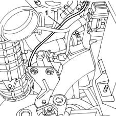
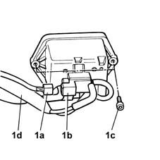

1080C70 VACUUM RESERVOIR - R.R.
- Path
- Procedures > 10 ENGINE UNIT > 1080 EXHAUST EMISSION CONTROL SYSTEM > 1080C exhaust gas recirculation system (e.g.r.) > 1080C70 VACUUM RESERVOIR - R.R.
- Kind
- repair procedure (removal / refitting; the operation number is the code)
- Applies to
- engines: 1.9 JTD 8V; all production periods
- Interactive page
- https://sloeber94.github.io/elrnDB-fMltpl/en/#/2891434
Applies to: engines: 1.9 JTD 8V; all production periods; only with equipment: Euro 3
 Removing
Removing
 Refitting
RefittingOpen the bonnet lid.
Disconnect the battery negative (-) terminal.
1080C74 E.G.R. - ELECTRICAL VALVE R.R.
Disconnect the pipe between the brake servo and the vacuum reservoir, brake servo side.
1. Disconnect the pipe between the vacuum reservoir and the variable geometry control valve on the valve side.

Applies to: engines: 1.9 JTD 8V; all production periods; only with equipment: Euro 3
1. Disconnect the electrical connector (1a) for the throttle casing solenoid valve (1b), then undo the two bolts (1c) fixing the reservoir and remove it complete with valve and pipes (1d).
 | Name | Connector |
|---|---|---|
1a | Butterfly casing solenoid valve |

Applies to: engines: 1.9 JTD 8V; all production periods; only with equipment: Euro 3
Refitting
RemovingConnect the electrical connector to the throttle casing solenoid valve.
| Name | Connector |
|---|---|---|
- | Butterfly casing solenoid valve |
Position the reservoir and tighten the two fixing bolts.
Connect the pipe between the vacuum reservoir and the variable geometry control valve on the valve side.
Disconnect the pipe between the brake servo and the vacuum reservoir on the brake servo side.
1080C74 E.G.R. - ELECTRICAL VALVE R.R.
Connect the negative (-) battery terminal.
Close the bonnet lid.